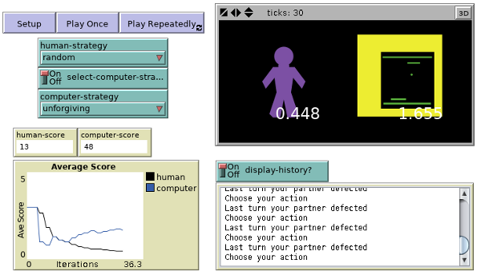
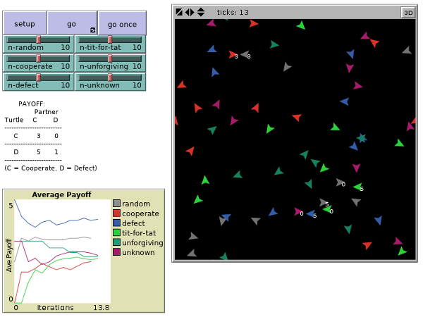

The prisoner’s dilemma
Two men are arrested, but the police do not possess enough information for a conviction. Following the separation of the two men, the police offer both a similar deal—if one testifies against his partner (defects/betrays), and the other remains silent (cooperates/assists), the betrayer goes free and the cooperator receives the full one-year sentence. If both remain silent, both are sentenced to only one month in jail for a minor charge. If each ‘rats out’ the other, each receives a three-month sentence. Each prisoner must choose either to betray or remain silent; the decision of each is kept quiet. What should they do? (Wikipedia)
The “dilemma” faced by the prisoners here is that, whatever the other does, each is better off confessing than remaining silent. But the outcome obtained when both confess is worse for each than the outcome they would have obtained had both remained silent. A common view is that the puzzle illustrates a conflict between individual and group rationality. A group whose members pursue rational self-interest may all end up worse off than a group whose members act contrary to rational self-interest. (Stanford Encyclopedia of Philosophy (SEP))
TOC
Iterated prisoner’s dilemma
If two players play prisoners’ dilemma more than once in succession and they remember previous actions of their opponent and change their strategy accordingly, the game is called iterated prisoners’ dilemma. (Wikipedia)
If the game is played exactly N times and both players know this, then it is always game theoretically optimal to defect in all rounds. The only possible Nash equilibrium is to always defect. The proof is inductive: one might as well defect on the last turn, since the opponent will not have a chance to punish the player. Therefore, both will defect on the last turn. Thus, the player might as well defect on the second-to-last turn, since the opponent will defect on the last no matter what is done, and so on. The same applies if the game length is unknown but has a known upper limit. (Wikipedia)
The iterated version of the PD was discussed from the time the game was devised, but interest accelerated after influential publications of Robert Axelrod in the early eighties. Axelrod invited professional game theorists to submit computer programs for playing IPDs. All the programs were entered into a tournament in which each played every other (as well as a clone of itself and a strategy that cooperated and defected at random) hundreds of times. It is easy to see that in a game like this no strategy is “best” in the sense that its score would be highest among any group of competitors. If the other strategies never consider the previous history of interaction in choosing their next move, it would be best to defect unconditionally. If the other strategies all begin by cooperating and then “punish” any defection against themselves by defecting on all subsequent rounds, then a policy of unconditional cooperation is better. Nevertheless, as in the transparent game, some strategies have features that seem to allow them to do well in a variety of environments. The strategy that scored highest in Axelrod’s initial tournament, Tit for Tat (henceforth TFT), simply cooperates on the first round and imitates its opponent’s previous move thereafter. More significant than TFT’s initial victory, perhaps is the fact that it won Axelrod’s second tournament, whose sixty three entrants were all given the results of the first tournament. (SEP)
Axelrod’s properties of a successful strategy (like TFT):
- nice — it is never the first to defect
- retaliatory — cannot be exploited by non-nice strategies
- forgiving — willing to cooperate even with those who have defected against it (provided the defection was not in the previous round; TFT would defect in this case)
- clear — easier for other strategies to predict its behavior to foster mutually beneficial interaction
Wikipedia says this about how to find an optimal strategy for IPD:
- Bayesian Nash Equilibrium: If the statistical distribution of opposing strategies can be determined (e.g. 50% tit for tat, 50% always cooperate) an optimal counter-strategy can be derived analytically.
- Monte Carlo simulations of populations have been made, where individuals with low scores die off, and those with high scores reproduce (a genetic algorithm for finding an optimal strategy). The mix of algorithms in the final population generally depends on the mix in the initial population. The introduction of mutation (random variation during reproduction) lessens the dependency on the initial population; empirical experiments with such systems tend to produce tit for tat players, but there is no analytic proof that this will always occur.
Simulations in NetLogo
Model: PD Two Person Iterated

The PD TWO PERSON ITERATED model demonstrates an interesting concept: When interacting with someone over time in a prisoner’s dilemma scenario, it is possible to tune your strategy to do well with theirs. Each possible strategy has unique strengths and weaknesses that appear through the course of the game. For instance, always defect does best of any against the random strategy, but poorly against itself. Tit-for-tat does poorly with the random strategy, but well with itself.
This makes it difficult to determine a single “best” strategy. One such approach to doing this is to create a world with multiple agents playing a variety of strategies in repeated prisoner’s dilemma situations. This model does just that. The turtles with different strategies wander around randomly until they find another turtle to play with. (Note that each turtle remembers their last interaction with each other turtle. While some strategies don’t make use of this information, other strategies do.)
Model: PD N-Person Iterated

Press & Dyson’s discoveries
Can a player win by manipulating the other player?
It would be surprising if any significant mathematical feature of [the iterated prisoner’s dilemma] has remained undescribed, but that appears to be the case, as we show in this paper.
Consider two players, X (she) and Y (he). Press and Dyson show that,
- longer memory does not help; for any long-memory strategy that Y could play, X can do just as well with a certain shorter-memory strategy (X’s equally-good strategy is calculated based on knowing Y’s strategy)
- player X can set player Y’s final score to any value in the range from the mutual non-cooperation score to the mutual cooperation score, regardless of player Y’s strategy; player X can do this with a fixed strategy (i.e., the strategy does not have to change depending on what player Y chooses each round); Y’s strategy has to be fixed, however
- player X cannot set her own score to any arbitrary value
They also show something else. Suppose player X wants more than the mutual non-cooperation score, which was her limit if she chose to set Y’s score to a particular value, independent of what Y was doing. She can get more reward if she “watches” or “thinks about” Y’s strategy as they play. When X does this, we say X has a “theory of mind” regarding Y.
If Y cooperates fully (at every step, the “Jesus” strategy; as might happen if Y’s score “evolves” since we have seen that evolutionary approaches to the prisoner’s dilemma typically yield cooperating strategies), then X can get maximum benefit (maximum extortion). However, since Y would be losing so much every time, an evolving Y would evolve away from that cooperating strategy.
How does X get Y to cooperate fully? If X knows that Y is evolving his strategy, then X can force Y to evolve his strategy into one of cooperation, by giving little benefits periodically when Y cooperates. X cannot achieve maximum score this way, but can still do better than Y.
The extortionate strategies have the peculiar property of sharply distinguishing beween “sentient” players, who have a theory of mind about their opponents, and “evolutionary” players, […] but have no theory of mind.
It is worth contemplating that, though an evolutionary player Y is so easily beaten within the confines of the IPD game, it is exactly evolution, on the hugely larger canvas of DNA-based life, that ultimately has produced X, the player with the mind.
Real life examples
Environmental studies
In environmental studies, the PD is evident in crises such as global climate change. All countries will benefit from a stable climate, but any single country is often hesitant to curb CO2 emissions. The immediate benefit to an individual country to maintain current behavior is perceived to be greater than the eventual benefit to all countries if behavior was changed, therefore explaining the current impasse concerning climate change. (Wikipedia)
Psychology
In addiction research/behavioral economics, George Ainslie points out that addiction can be cast as an intertemporal PD problem between the present and future selves of the addict. In this case, defecting means relapsing, and it is easy to see that not defecting both today and in the future is by far the best outcome, and that defecting both today and in the future is the worst outcome. The case where one abstains today but relapses in the future is clearly a bad outcome—in some sense the discipline and self-sacrifice involved in abstaining today have been “wasted” because the future relapse means that the addict is right back where he started and will have to start over (which is quite demoralizing, and makes starting over more difficult). The final case, where one engages in the addictive behavior today while abstaining “tomorrow” will be familiar to anyone who has struggled with an addiction. The problem here is that (as in other PDs) there is an obvious benefit to defecting “today”, but tomorrow one will face the same PD, and the same obvious benefit will be present then, ultimately leading to an endless string of defections. (Wikipedia)
Law
The theoretical conclusion of PD is one reason why, in many countries, plea bargaining is forbidden. Often, precisely the PD scenario applies: it is in the interest of both suspects to confess and testify against the other prisoner/suspect, regardless of actual guilt. (Wikipedia)
Play it by Trust, Yoko Ono
One Good Deed Deserves Another (Radiolab, December 14, 2010)
25 min / Download MP3 / Radiolab website for this segment; this is from the episode The Good Show.